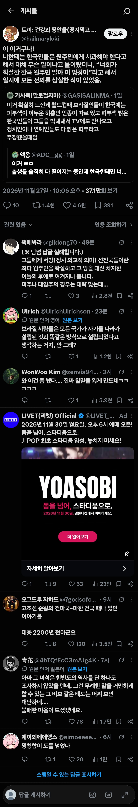

??? : 한국인들은 사과해야 한다
댓글
싸이족 네이티브 맞죠?
바로 싸이족이 탄압받은 토종 한국인인거지
요아소비 바이럴 ㄷㄷ
코리안 슬로터
하긴 옆집 일본도 중국도 단일 민족이 아니긴 하네.
저 무슨무슨왕 후손인데 다 나가주셨으면 합니다
너무 대단한 개소리라 할말도 없네 ㅋㅋㅋㅋ
와 요아소비 내한ㄷㄷ
사람이랑 말싸움 중인줄 알았는데 짐승 울음소리를 말로 착각한 기분들듯ㅋㅋㅋㅋ
4천년 전에 환인 곰부족 연합에 밀려난 호랑이 부족을 말하는듯?
못생긴애들은 원주민 취급하는거냐ㅋㅋㅋ
안그래도 서러운데 더 서럽게하네 시발럼들
변한 주민들의 한을…!!
그게너야임마ㅋㅋㅋㅋㅋ
저는 예맥계란 말입니다앗
4400년전이다... 다쓰까졌어 떼어내지도못해
4400년 우리 조상님 귀실세환 님의 원한을 갚을때다!
원주민이 누군데
니가
외모로 봤을때 내가 원주민임이 틀림없다
내가 원주민이었구나..
아 맞다 깜빡할뻔.. 요아소비 위버스 멤버십 가입하고 선예매 준비하기 와드
내가 학살당한 싸이족의 후손이다!
퍼리의 후예인데요? 환웅이 곰을 어쩌고 저쩌고
검은 피부의 한국인들도 해 안보고 외출시 썬크림 잘 바르면 하얘짐..
일본어족에게 사과라도 하란 말이냐??
뇌정지
신라장군 이사부가 우산국을 점령했을때부터 이어진..
엄마한테 사과하라는 건가
위만조선까지 가야하나
역사에서 지워진 싸이부족의 한을!
귀마족의 치욕을!
쟤네가 보는 한국인은 차은우와 싸이로 나뉜다고…
차은우!! 싸이한테 사과해!!
ㅋㅋㅋㅋㅋㅋㅋㅋㅋㅋ 멍청함이 극이구만
단군은 어디까지 내다본겁니까
지방쪽에서 외모가 두드러지는 가족을 본 적 있음
그런데 비슷한 외모의 가족이 2팀이 더 있는거임
그런데 서로 모르는 사람들인거 같았음
그때 아 이 사람들이 적법한 한반도 주인들의 후예구나라고 느꼈음
한반도는 통일신라 이후 유입만 있고 인종구성이 크게 달라지진 않아서 대충 1500년 이상이몀 원주민 해줘야하는게 아닐까
한국엔 한국인과 싸이족이 있다
bts 원주민족을 학살한 잔학무도한 싸이족들 ㄷㄷ
부여계가 밑으로 내려온거 말하는거면 인정
뭐 좀 양념 보태서 말하면 원시 일본인들이 한반도 원주민이긴 하지. 만주에서 온 고대 한국인들에게 교배프레스 당하거나 서식지에서 쫒겨나서 열도로 도망가긴 했지만 ww
웅녀가 원주민인가?
엄....아이엠 네이티브 코리안...